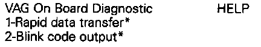
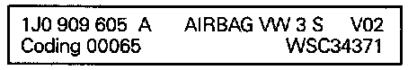
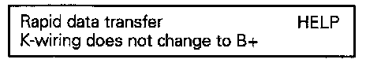
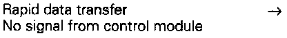
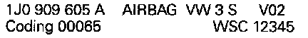
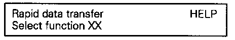
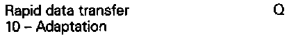
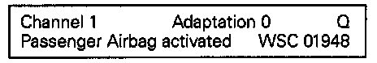
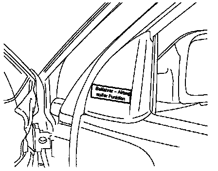

Passenger's Air Bag Deactivation
To allow the passenger seat to be used with a child seat with the child's back positioned toward the front of the vehicle, the airbag unit can be deactivated with the VAG 1551 Scan Tool. As soon as the child seat is no longer needed, the airbag can be activated again..For subsequent conversions, the repair kit 1HO 998 521 sticker and registration card are needed.
- All fuses OK according to applicable wiring diagram
- Battery voltage OK

- Remove ashtray and slide cover for Data Link Connector (DLC) to the left (arrow).
- Switch off ignition and connect VAG 1551 Scan Tool, using VAG 1551/3 adapter harness.
V.A,G. Display:

1 and 2 are displayed alternately
NOTE:
- If no display is indicated, check voltage supply to VAG 1551 Scan Tool according to applicable wiring diagram.
- Additional operating instructions can be printed out by pressing the HELP button on the VAG 1551 Scan Tool..
- The -> button advances the Scan Tool program sequence.
- The PRINT button switches the printer on (indicator light in button lights up).
- Switch ignition on.
- Press button -1- for "Rapid data transfer" operating mode.
V.A,G. Display:

- Press buttons -1- and -5- to insert address word "Airbag"
V.A,G. Display:

- Press -Q- button to confirm input, then the following is displayed (for example):
V.A,G. Display:

Indicated on display is the airbag control module identification number. The Malfunction Indicator Light (MIL) -K75- lights up.
V.A,G. Display:

NOTE:
- If any of the listed messages appear. press the -HELP- button to print out the possible causes for the malfunction.
V.A,G. Display:

- The ignition must be switched on.
V.A,G. Display:

- Malfunctions have occurred at the start or during the program (external interference?).
V.A,G. Display:

Check VAG 1551/3 adapter harness, voltage supply (B+) and Ground (GND) connections.
- After repairing possible malfunction, press buttons -1- and -5- to insert address word "Airbag" Press -Q- button to confirm input..
V.A,G. Display:

- Indicated on display after entering address word 15.
V.A,G. Display:

Indicated on the display (for example) is the airbag control module identification number with the index letter, code number and dealer number.
- Press -> button.
V.A,G. Display:

- Press buttons -1- and -0- to select "Adaptation"
V.A,G. Display:

- Press -Q- button to confirm input.
V.A,G. Display:
- Press buttons -0- and -1- and press -Q- button to confirm input.
Deactivating Airbag for Passenger's Side:
V.A,G. Display:

- Press -> button.
V.A,G. Display:

Indicated on display
- Enter 00001 and press -Q- button to confirm input.
V.A,G. Display:

- Press -Q- button to confirm input..
V.A,G. Display:

- If you want to store value, press -Q- button to confirm input..
- If you do not want to store value, press -C- button. Display will show previous value.
V.A,G. Display:

- Press -> button.
V.A,G. Display:

- Press buttons -0- and -6- to end output.
V.A,G. Display:

- Press -Q- button to confirm input. Airbag Malfunction Indicator Lamp (MIL) -K75- goes out.
V.A,G. Display:

- Switch ignition off.
- Disconnect VAG 1551 Scan Tool.
- Switch ignition on.
After switching the ignition on, the airbag Malfunction Indicator Light (MIL) -K75- lights up for approximately 4 seconds, and then goes out again. If the MIL blinks for an additional 12 seconds, it indicates that the passenger's airbag was deactivated.

- Attach label (Passenger's side airbag deactivated) on mirror cover of passenger's door.
After deactivating the airbag on the passenger's side, the registration card must be filled out and sent to the address indicated on the card. A note must be entered in the maintenance booklet that the airbag on the passenger's side was deactivated.
A duplicate registration card must be kept by the driver until the airbag is activated again.
Activating Airbag For Passenger's Side:
V.A,G. Display:

- Press -> button.
V.A,G. Display:

- Enter 00000 and press -Q- button to confirm input.
V.A,G. Display:

- Press -Q- button to confirm input.
V.A,G. Display:

- If you want to store value, press -Q- button to confirm input.
- If you do not want to store value, press -C- button. Display will show previous value.
V.A,G. Display:

- Press -> button.
V.A,G. Display:

- Press buttons -0- and -6- to end output.
V.A,G. Display:

- Press -Q- button to confirm input. Airbag MIL -K75- will go out.
V.A,G. Display:
- Switch ignition off.
- Disconnect adapter harness to VAG 1551 Scan Tool.
- Switch ignition on
Airbag MIL -K75- will light up and must go out after approximately 4 seconds.

- Remove label "Airbag deactivated" from passenger's door.
After activating the airbag on the passenger's side, the registration card must be filled out and sent to the address indicated on the card. A note must be entered in the maintenance booklet that the airbag on the passenger's side was activated.